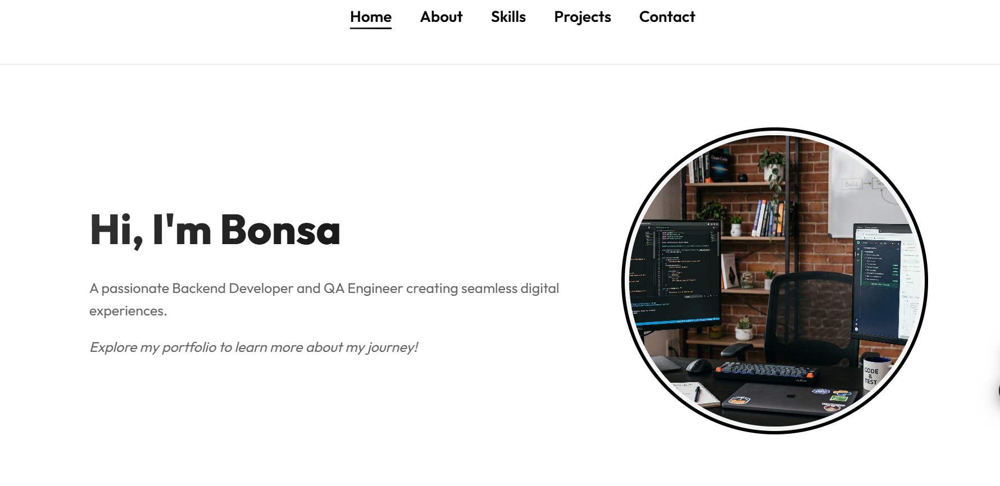
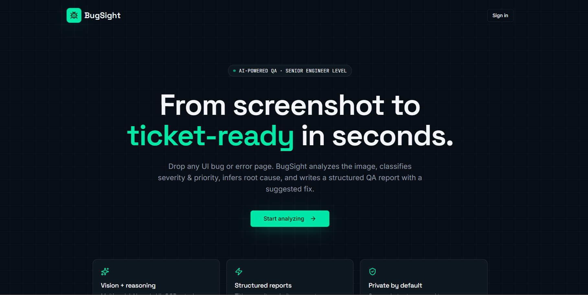
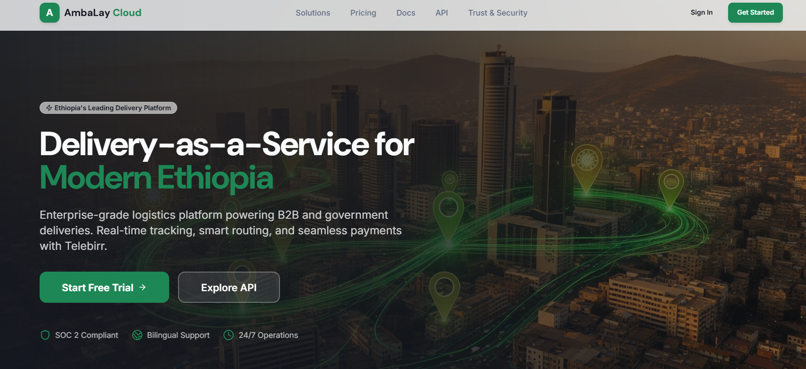

My Projects
Here are some of the recent projects I have been working on.
Project 1: Personal Portfolio Website

Description: A multi-page personal portfolio website built to showcase my skills and
projects. It features a responsive design and modern UI principles.
Technologies: HTML5, CSS3
Links: View Source Code
Project 2: Bug Sight Platform

Description: BugSight analyzes the image, classifies severity & priority, infers
root cause, and writes a structured QA report with a suggested fix.
Technologies:JavaScript, React, Supabase
Links: View Source Code
Project 3: Delivery As A Service-DAAS

Description:DAAS is a platform where users can order products from different vendors
and get it delivered to their doorstep. It also allows users to track their orders in real-time.
Technologies:JavaScript, React, Tailwind, Express.js, PostgreSQL
Links: View Source Code